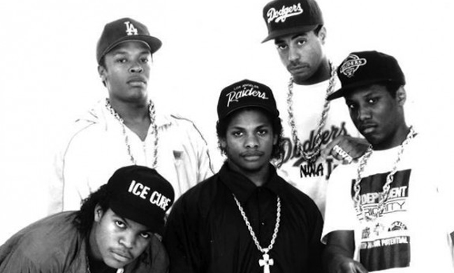
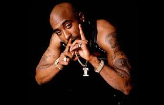

West Coast Rap
"The Home of The G-Funk"
About West Coast Rap
While the West Coast had its share of success in the early 80's, it wasn't until 1988, when NWA came onto the scene, that the region truly came of age. With a sound inspired by the streets, and lyrics laced with aggression and profanity, NWA caught the attention of youths across the nation, who were curious what was really going on in the streets of LA. Following a dispute about money, one of the members of NWA, Dr. Dre, left the group and went on to found Death Row Records. This record label became a breeding ground for West Coast talent such as Snoop Doggy Dogg, 2Pac Shakur, Dr. Dre himself, who released his first solo album, The Chronic, on Death Row records. Death Row, and the "G-Funk" sound that Dr. Dre popularized during that era, ruled the early 90's. The region's popularity peaked in the mid-90's, when Death Row's flagship artist, 2Pac Shakur, declared war on the entire East Coast, and put the Notorious B.I.G. directly in his cross-hairs. While the beef produced some of the most memorable "diss" tracks in hip-hop history, it ended with the dead of both 2Pac and the Notorious B.I.G.. These tragedies caused the West Coast, and hip-hop in general, to re-evaluate their priorities.
Ryan's Top Websites
Ryan's Favorite West Coast Rap Song
My favorite West Coast rap song is Regulate by Warren G. The song was produced by Warren G., and features the late West Coast crooner Nate Dogg in a call and response sequence throughout the verses. It samples one of my favorite 70's funk songs, "I Keep Forgettin'. The beat embodies "G-Funk," and the lyrics are smooth enough such that this song can play on repeat for hours before becoming annoying! This was Warren G's biggest hit, though he also wrote for Dr. Dre and NWA (but didn't perform on those tracks). Warren G's lyrics were a lot less violent than his contemporaries; instead of talking about gang banging, he rapped about hanging out on the streets with his friends and chasing women. He made LA, and Long Beach specifically, seem like a pretty laid-back and fun place, and painted a much less scary picture of the region than his friend and frequent collaborator Snoop Dogg did. Regulate is my perfect driving song; there's nothing like driving through town with the windows down and the sunroof open while listening to this West Coast classic!
Notable West Coast Rappers
- 2Pac Shakur
- B-Real
- Coolio
- Cypress Hill
- Crooked I
- Daz Dillinger
- Del the Funky Homosapien
- Digital Underground
- Dilated Peoples
- DJ Quick
- Eazy-E
- E-40
- Ice Cube
- Lady of Rage
- MC Ren
- Nate Dogg
- NWA
- Snoop Doggy Dogg
- The D.O.C.
- Warren G.
- Xzibit
Ryan's Top 3 West Coast Rappers
- 2Pac
- Nate Dogg 
- NWA

Behind the Ranking
Rapper |
Lyrics |
Beats |
|---|---|---|
2Pac Shakur |
9/10 |
9/10 |
Nate Dogg |
7/10 |
9/10 |
NWA |
9/10 |
7/10 |